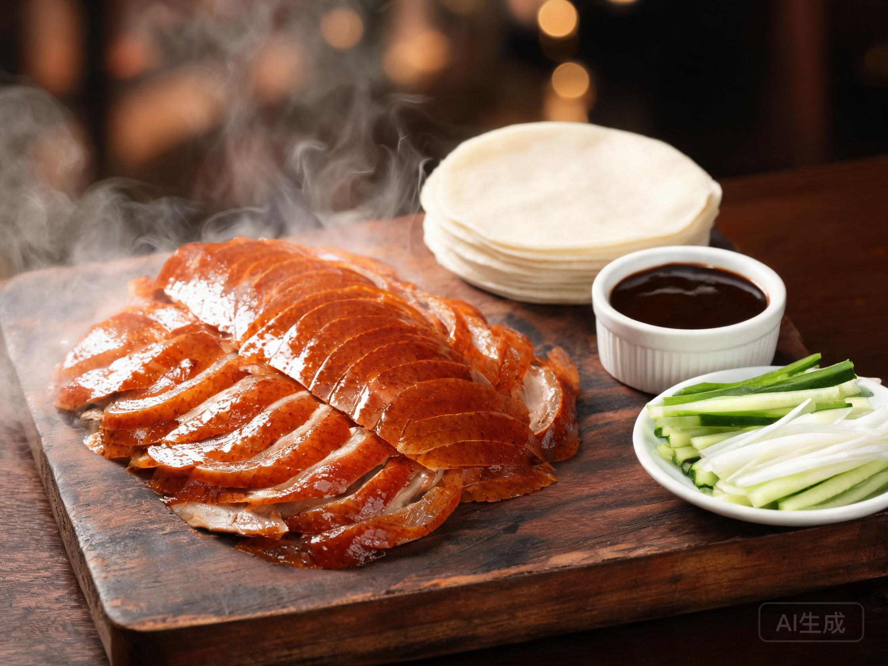
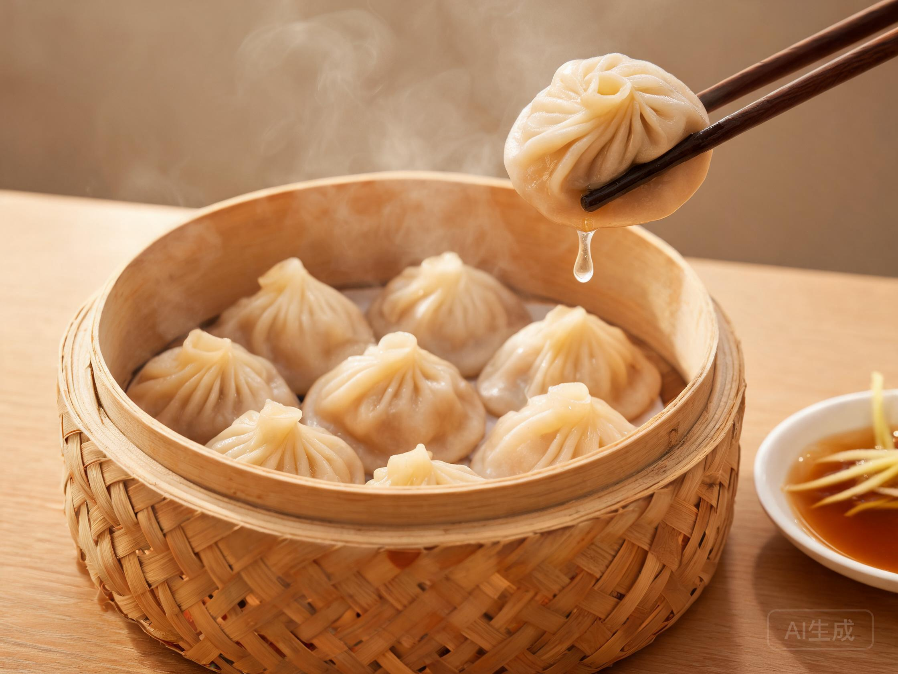
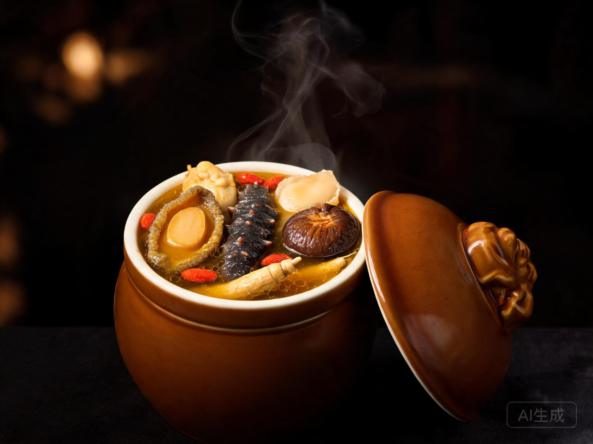

01

北京烤鸭
皮脆肉嫩、肥而不腻。果木挂炉烤制，配薄饼、葱丝与甜面酱卷食，是京菜的头牌。
02
麻婆豆腐
麻、辣、烫、香、酥、嫩、鲜、活八字箴言。豆腐嫩滑红油亮，花椒一撒满屋香。
03

小笼包
皮薄如纸、提褶如花。轻轻提、慢慢移、先开窗、后喝汤——一口鲜汁烫嘴也值。
04

佛跳墙
坛启荤香飘四邻，佛闻弃禅跳墙来。鲍参翅肚十余种料，文火煨足时辰方成一坛。
已经是第一张
第 1/4 张
验收自检：
① 阈值生效——横向位移 < 40px 的短距离误触直接忽略，不会切换；
② 300ms 冷却——切换后 0.3 秒内的再次滑动被忽略，快速连滑不会一次跳两张；
③ 卡片容器加 touch-action: pan-y——横向手势归页面代码接管，纵向滚动仍交给浏览器，拖卡片时页面不会跟着乱滚。